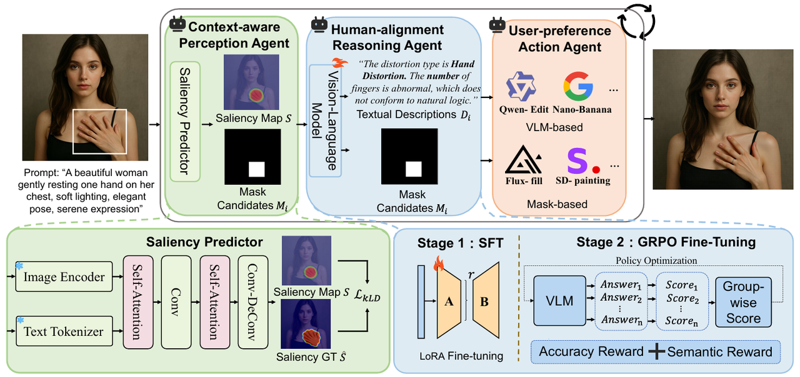
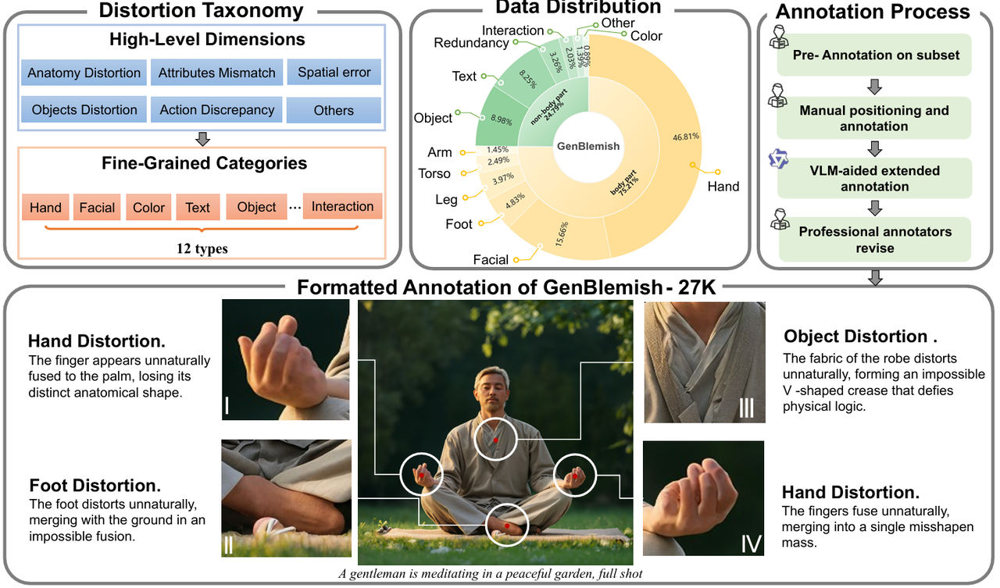
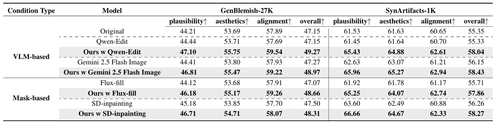
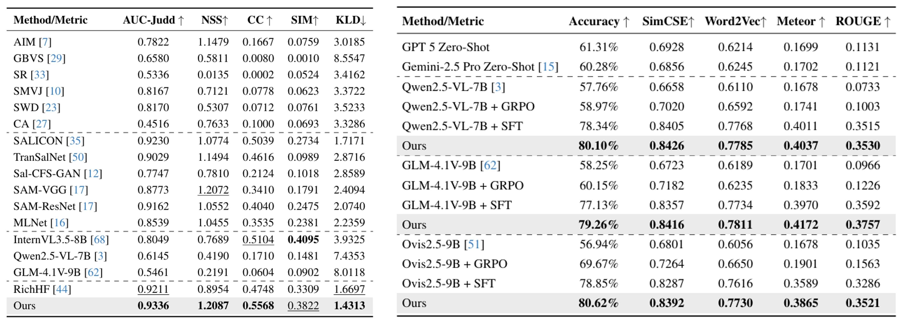
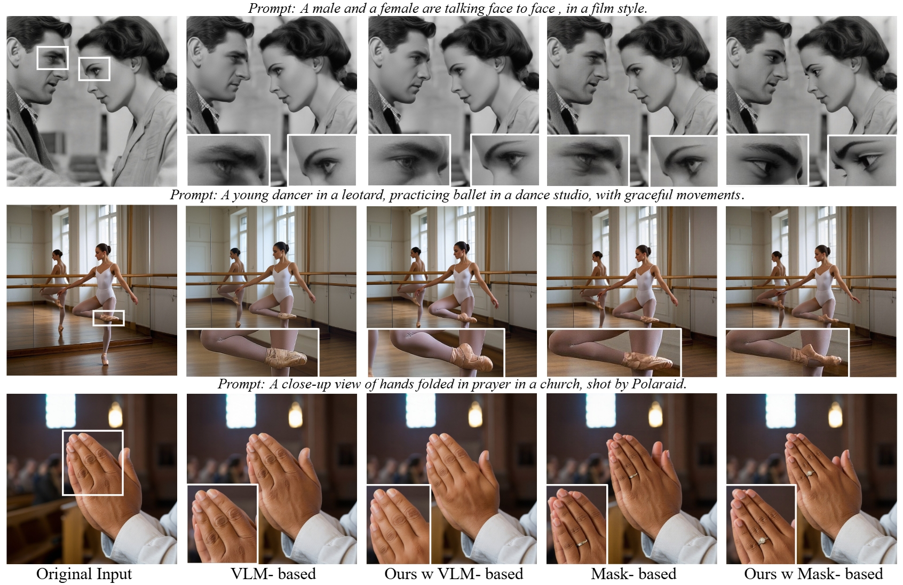

Abstract
Text-to-image (T2I) diffusion models such as SDXL and FLUX have achieved impressive photorealism, yet small-scale distortions remain pervasive in limbs, face, text and so on. Existing refinement approaches either perform costly iterative re-generation or rely on vision-language models (VLMs) with weak spatial grounding, leading to semantic drift and unreliable local edits. To close this gap, we propose Agentic Retoucher, a hierarchical decision-driven framework that reformulates post-generation correction as a human-like perception-reasoning-action loop. Specifically, we design (1) a perception agent that learns contextual saliency for fine-grained distortion localization under text-image consistency cues, (2) a reasoning agent that performs human-aligned inferential diagnosis via progressive preference alignment, and (3) an action agent that adaptively plans localized inpainting guided by user preference. This design integrates perceptual evidence, linguistic reasoning, and controllable correction into a unified, self-corrective decision process. To enable fine-grained supervision and quantitative evaluation, we further construct GenBlemish-27K, a dataset of 6K T2I images with 27K annotated artifact regions across 12 categories. Extensive experiments demonstrate that Agentic Retoucher consistently outperforms state-of-the-art methods in perceptual quality, distortion localization and human preference alignment, establishing a new paradigm for self-corrective and perceptually reliable T2I generation.
Method

Overview of the proposed Agentic Retoucher. The framework operates as a perception-reasoning-action loop for post-generation correction in AIGC. The Perception Agent localizes context-dependent distortions via cross-modal saliency prediction, the Reasoning Agent performs human-aligned diagnosis through iterative reasoning, and the Action Agent executes adaptive localized inpainting guided by reasoning outputs, forming a closed-loop self-corrective process.
Dataset: GenBlemish-27K

Overview of GenBlemish-27K. The figure illustrates (a) the dual-layer distortion taxonomy with six high-level dimensions and twelve fine-grained categories, (b) the distribution of localized distortion types, (c) the human-AI collaborative annotation pipeline, and (d) representative formatted samples with pixel-level masks and textual descriptions, highlighting how GenBlemish-27K enables fine-grained localization and reasoning over diverse text-to-image distortions.
Quantitative Results

Quantitative comparison of Agentic Retoucher with VLM-based and mask-based inpainting baselines on the GenBlemish-27K and SynArtifacts-1K datasets.

Left: Quantitative evaluation of the Context-Aware Perception Agent on distortion-aware saliency prediction. Higher AUC-Judd, NSS, CC, SIM and lower KLD indicate better context perception. Right: Quantitative evaluation and ablation of the Human-Alignment Reasoning Agent.
Qualitative Results

Qualitative comparison of retouching results across diverse prompts. White bounding boxes indicate zoomed-in fine-grained regions. Agentic Retoucher retouches local distortions and implausibilities while maintaining global visual harmony, outperforming both VLM-based and mask-based baselines.
BibTeX
@misc{shen2026agenticretouchertexttoimagegeneration,
title={Agentic Retoucher for Text-To-Image Generation},
author={Shaocheng Shen and Jianfeng Liang and Chunlei Cai and Cong Geng and Huiyu Duan and Xiaoyun Zhang and Qiang Hu and Guangtao Zhai},
year={2026},
eprint={2601.02046},
archivePrefix={arXiv},
primaryClass={cs.CV},
url={https://arxiv.org/abs/2601.02046},
}